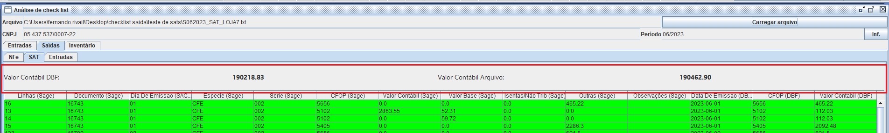

Instrução de Trabalho
Checklist para Escrituração Fiscal
| Elaboração | Aprovação | ||||
|---|---|---|---|---|---|
| Nome | Visto | Data | Nome | Visto | Data |
| Fernando Rivail dos Santos Santana | 13/07/2023 | {Escreva o nome de quem aprovou o projeto} | {Escreva a data do visto de aprovação no formato DD/MM/AAAA} | ||
1. Objetivo
O projeto tem como objetivo aperfeiçoar o processo de escrituração estudal, garantindo maior precisão e exatidão nos registros contábeis. Busca-se eliminar erros e inconsistências, melhorar a qualidade dos dados registrados e agilizar a execução das tarefas contábeis.
2. Referências
Software Sage
3. Definições
Não aplicável
4. Procedimentos e Responsabilidades
Será possível visualizar as notas que não foram exportadas para o software sage (software responsável pela pela contábil e fiscal) permitindo maior transparência e confiabilidade na entrega da escrituração fiscal.
4.1 Entradas
4.1.1 Exportar FML do ERPJ
Dentro do ERPJ, vá em Contabilidade → Folhamatic → Exportar registros padrão FML.
Na tela de exportação, selecione:
- A filial que terá suas notas exportadas
- Check "Periodo" em Exportar por - Selecione o periodo inicial e o
final
- Check a flag Exportar Cadastros (Clientes/Fornecedores)
- Check a flag Exportar Notas Fiscais de Entrada
- Check a flag Exportar Produtos
E clique em Exportar.
4.1.2 Importar FML no Sage
Após realizado a passo acima, será gerado um arquivo FML em
C:\DBF\dist
Dentro do Sage, vá em Diversos → Importações → Importar Dados
→ Arquivo Folhamatic → 2.0.06
Carregue o arquivo FML gerado anteriormente clicando no botão Importar e aguarde a conclusão do processo.
4.1.3 Relatório
Após concluir o processo de importação do arquivo FML, vá em
Relatórios → Relatórios → Livro → Fiscal → Entrada e selecione a
flag "Gerar em arquivo texto".

Check a flag "Gerar o relatório selecionado em Arquivo Texto" e
clique em Gerar.
4.1.4 Checklist de Entrada
Com o arquivo de registros da Escrituração Fiscal já gerados, vá em
Contabilidade → Folhamatic → Análise de Checklist
Selecione o arquivo de entrada que foi gerado clicando em "Carregar
Arquivo".
Obs: O arquivo de entrada deve ser carregado na aba de
entrada!
Após carregado o arquivo, os registros em verde são os que constam
na escrituração fiscal e tem seus valores contábeis corretos para
cada CFOP e numero do documento.
Os vermelhos são os que não constam no arquivo gerado pelo
sage por conta de alguma avaria ou problema ocorrido de exportação
no arquivo FML.
É possivel consultar separadamente as notas de saida que foram
devolvidas, como as devoluções de clientes e compra de sucata.
Dentro da tela de checklist acesse a aba "Saidas" e a aba
"Entradas".
4.2 Saidas
4.2.1 Exportar Lotes do ERPJ
A exportação nas Saidas é semelhante ao processo de entrada, vá em
Contabilidade → Nfes/Sats/NFSes → Exportar lotes de Nfes.
Selecione o período, a loja e o local onde será salvo o
arquivo. Não é necessário gerar as DANFEs
O arquivo também é
salvo em C:/DBF/dist
4.2.2 Importar Lotes no Sage
Com o lote de XML já exportado, vá no Sage e entre em Diversos →
Importações → NFe - Federal → Nfe Saida e Emissão Própria.
Carregue o arquivo em lotes, clique em Exportar e aguarde o processo
concluir.
4.2.3 Relatório
Após o processo de importação de lotes no sage, vá em Livro → Fiscal
→ Saida e check a flag "Texto" e clique no botão Texto.
4.2.4 Checklist de Saida
Com o arquivo txt de saida gerado, vá na tela de checklist e click
na aba "Saida" e informe o arquivo.
Na aba de saidas temos as abas interna de NFEs, onde tem o
mesmo propósito citado acima.
Registros verdes estão de acordo
com a escrituração fiscal e as vermelhas, com possiveis problemas.
Na Aba SAT tem o propósito principal, com o acrescento do valor
contábil mensal, para facilitar a realização da escrituração.

5. Registros
6. Histórico de Revisões
| Revisão | Descrição | Revisor | Data |
|---|---|---|---|
| 00 | {Escreva a descrição da revisão} | {Escreva o nome do Revisor} | {Escreva a data da revisão no formato DD/MM/AAAA} |